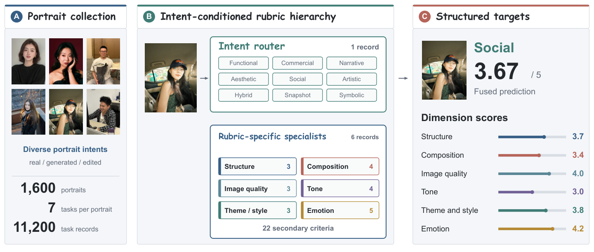
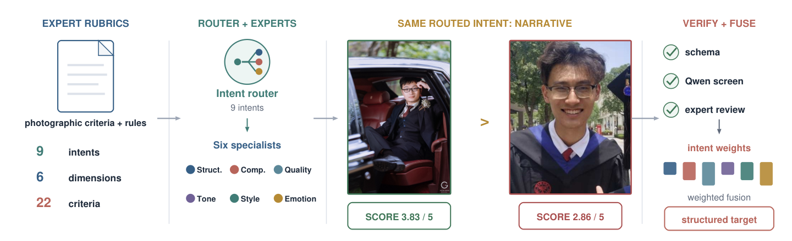
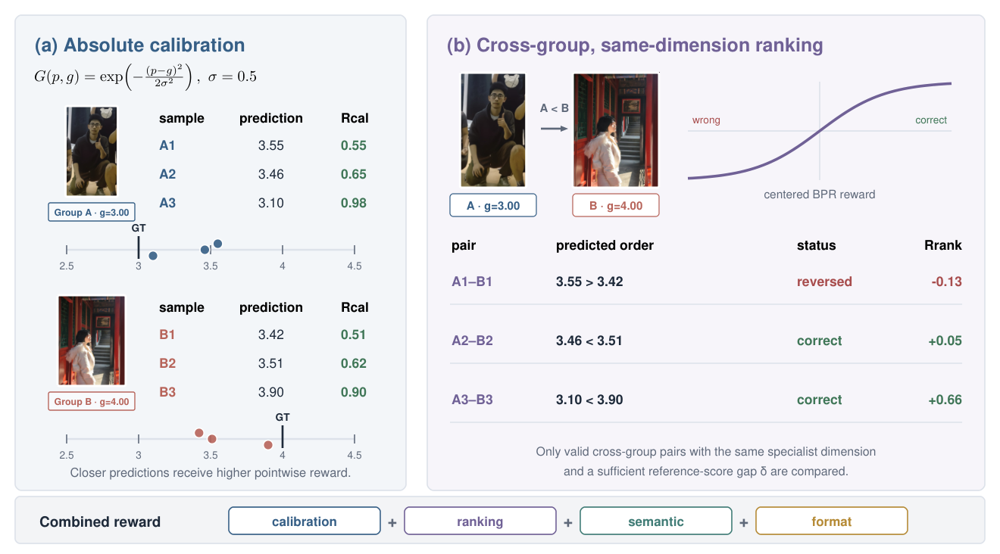
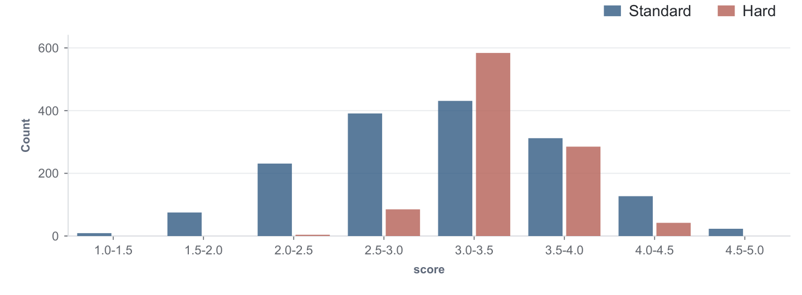
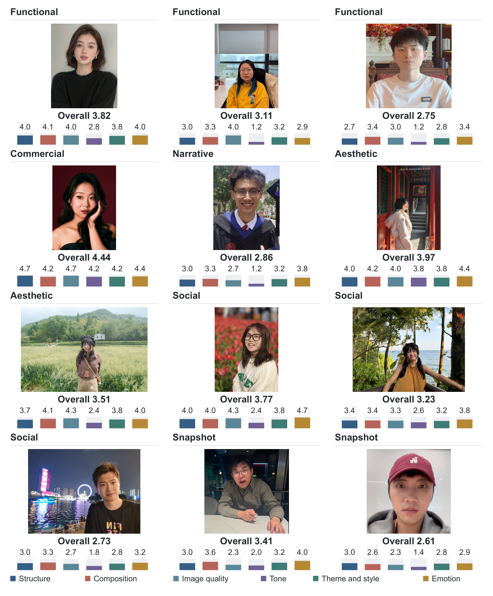

Intent matters
The same visual choice can be appropriate for one photographic intent and harmful for another.
Project page · 2026

Portrait aesthetic assessment measures how effectively a human-centered image fulfills its photographic intent. Existing methods usually predict one aesthetic score or use general-purpose multimodal models without conditioning on intent. This matters because the same blur, pose, lighting, or framing choice may support one purpose but weaken another.
We introduce PortraitAes-Bench, an 11K-scale benchmark built from expert-authored rubrics for nine photographic intents, six dimensions, and 22 secondary criteria. Following its router–specialist–fusion structure, PortraitAes learns structured judgments with multi-task supervision, Gaussian score calibration, and within-dimension cross-image ranking.
Portraits serve functional, commercial, documentary, social, and artistic purposes. A useful assessor must identify that purpose, evaluate visible evidence under explicit criteria, and keep scores comparable across images.
The same visual choice can be appropriate for one photographic intent and harmful for another.
Structured dimensions reveal where a portrait succeeds or fails instead of hiding the cause in one number.
Pointwise accuracy alone does not guarantee the correct ranking between visually similar portraits.
PortraitAes-Bench contains 1.6K portraits expanded into approximately 11K linked task records. Each image produces one intent-routing record and six specialist records for structure, composition, image quality, tone, theme and style, and emotion.

Nine intents, six dimensions, 22 criteria, score anchors, and veto or cap rules define what each role evaluates.
Records retain scores, semantic labels, subcriteria, visible-evidence rationales, and rule decisions.
The final score combines available specialist judgments using the importance weights of the routed intent.
PortraitAes adapts Qwen3.5-VL-9B in two stages. Multi-task supervised fine-tuning first learns the intent router and six rubric-specific specialists. Rank-aligned optimization then improves numerical calibration and cross-image order while retaining structured outputs.

10,286 training images provide approximately 72K examples across the router and six specialist tasks.
A Gaussian reward measures numerical distance for each specialist score and its rubric subcriteria.
Valid examples are compared only within the same dimension and when their reference gap defines a reliable order.
PortraitAes achieves the strongest overall correlations among the evaluated general-purpose multimodal models and specialized aesthetic baselines.
0.924PLCC
0.934SRCC
0.829PLCC
0.795SRCC

The model predicts an intent-conditioned overall score together with six specialist scores and dimension-level explanations grounded in visible evidence.
